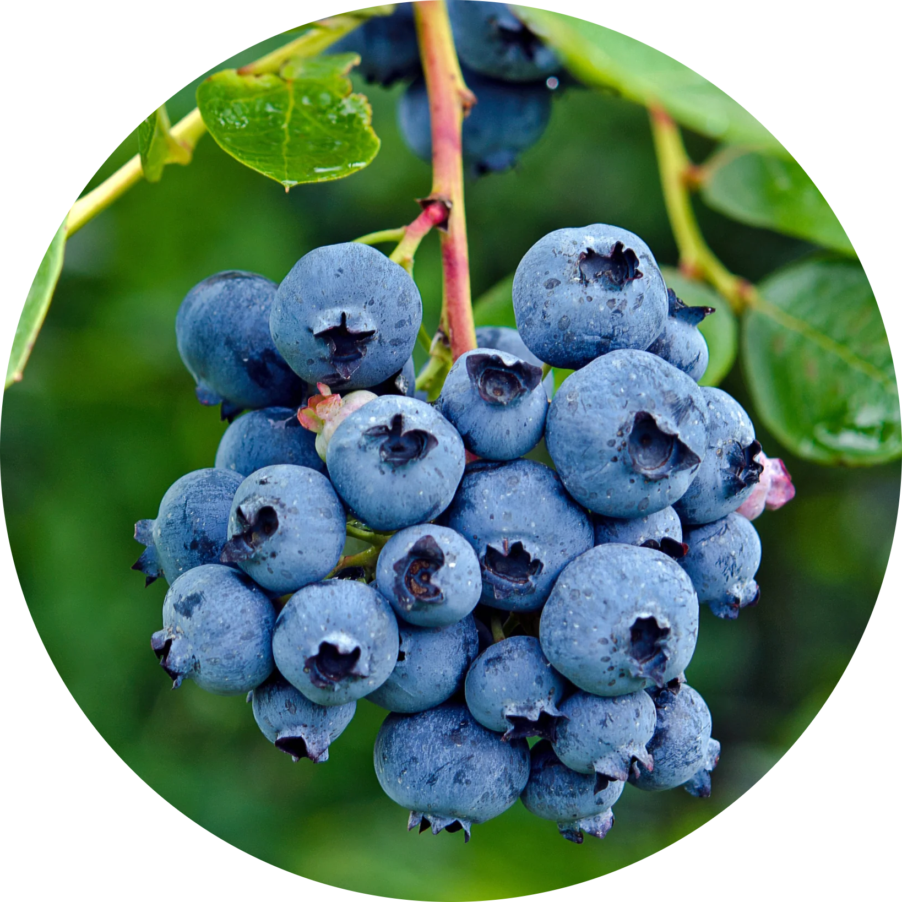

Hey there! Thank for you stopping by my webpage, it means a lot that you're interested in who I am and what I'm all about. The point of this site is to give a quick run down who I am, where I come from, what experience I've derivated from it, and where I'm looking to go. Below is a quick run-down of myself: my characteristics, goals, motivations, and interests. If you have any questions for me or are interested in my work, you're more than welcome to reach out to me through my email, phone number, or my LinkedIn page. Thanks again for stopping by!
-Ethan
Short-Term Goals
Right now I'm focused on finishing up my Bachelor's degree at the University of Michigan and polishing off my skills utilizing Apache Spark, SQL, and the R programming language. I am currently searching for an internship opportunity that well complement these goals; working with skilled individuals that I can learn, grow, and develop under.


Long-Term Ambitions
In the long-term, I'm looking to work with large, complex datasets to observe patterns and deviations that prove useful to decision makers. I want to work in an environment where I am encouraged to shift, sort, and engineer data into something palettable to a wider audience. Where others see a nonsensical jumble of numbers and labels, I'm looking to take that chaos and turn it into a storytelling device that can be utilized to forward long-term decisions and objectives.
Personality and Role
This section is largely based off of personality test results provided by 16personalities.com, a webpage dedicated to compiling test results into discrete personality categories. I recommend checking it out if you're unfamiliar with it! My test results indicate that my personality aligns with the Advocate Archetype (INFJ-T).
I priorize empathy and coordination, with strategies composed of consistent coaching, improvement, and individualistic discovery. I'm intoverted and work efficiently in my own space, but also enjoy collaboration in team settings and recognizing diverse insights. I try and find the extrodinary in the ordinary and dissect hidden meanings and future possibilities. I tend to be more empathic and cooperative than competitive, striving to harmonize rather than contend. I focus on ethical and communal impact rather than strict quantitative results.
My 16Personalities FactsheetMission and Values
Sustainability: There is no Planet B! I'm always an advocate for long-term, sustainable solutions to problems as opposed to kicking the can down the road. I look for ways that waste can be minimized while maintaining efficiency.
Approachability: I always ensure that my team members feel comfortable coming to me with any issues, grievances, confusion and questions. I believe that function organization relies on approachability: whether it be between coworkers or superiors.
Strengths
Insightful: I strive to look at problems at new directions: looking for any cracks, holes or blemishes to exploit in order to produce valuable information the task at hand.
Passionate: I stay focused and determined on things I find interesting and important, going above and beyond in my work to make meaningful impact towards goals.
Cooperative: With experience in leadership roles, I work well in cooperative environments where I can bring out the best within the entire team. I find diverse insight, constructive criticism, and collaboration refreshing, productive, and efficient.
Resourceful: If I don't know something, I'll find a way to know! I find no shame in admitting that there are plenty of gaps in my knowledge, and have ample experience in consulting the resources provided to me. Whether it be scrolling through tens of agruments to a niche coding function, or navigating hundreds of corporate pages to find an updated policy from years ago, I will find it!
Hobbies
Outside of work and school, I'm a HUGE lover of any type of strategy game. I play a lot of video games with strong logistical management themes: Hearts of Iron IV, Civilization, Total War, Stellaris, and Offworld Trading Company just to name a few. I also enjoy playing competitive board games with friends: Settlers of Catan, Root, and Risk for example. Cooperative games also have a special place in my heart: Daybreak, Pandemic, and Dungeons & Dragons!